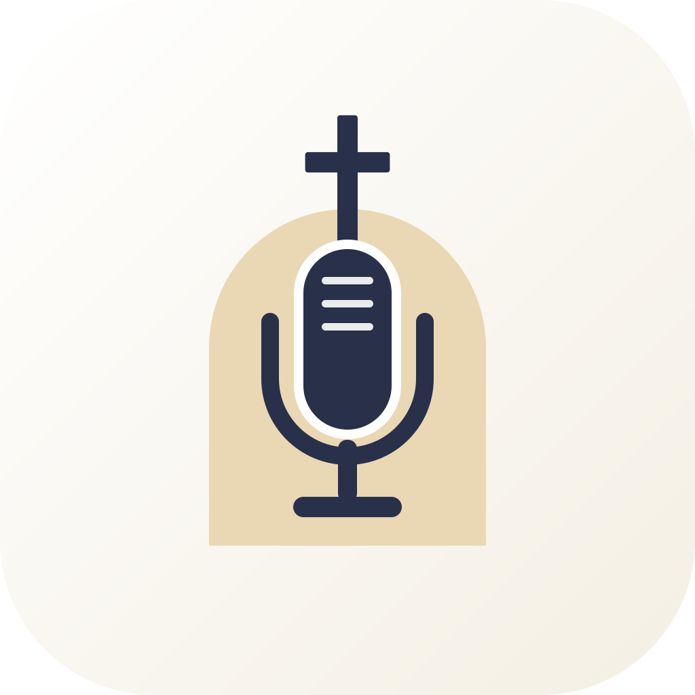

Under utviklingSundayStudio
Mange mikrofoner samtidig, AI-drevet opprydding og nivåjustering, en generert jingle på under ett minutt, og en ferdig LUFS-normalisert MP3 klar for Spotify og Apple Podcasts. Enklere enn GarageBand, vennligere enn Audacity, langt billigere enn proff-verktøyene.
Fra råopptak til ferdig episode
Alt du trenger for en proff menighetspodkast, samlet i én app.
Fleirspors-opptak
Ta opp 5–8 mikrofoner samtidig, hvert spor for seg, med lav-latens monitor og solo/mute.
AI-opprydding
Automatisk nivåjustering og jevn lyd på tvers av stemmer — uten lydteknikar.
Jingle på minuttet
Generer en ferdig kjenningsmelodi til podkasten på under ett minutt.
Bølgeform-editor
Klipp, krysston, fjern stillhet og bounce tidslinjen — ikke bare hele opptak.
Mastering & loudness
Innebygd DSP-kjede og LUFS-normalisering klar for strømmetjenestene.
Ferdig eksport
Bounce til mastret WAV og encode til MP3 med ett klikk, klar for opplasting.
Proff podkast uten lydteknikar.
SundayStudio tar de vanskelige delene av lydproduksjon — nivåer, loudness, støy — og gjør dem automatiske, slik at du kan konsentrere deg om innholdet.
- Forhåndslagde maler for ulike opptaksformat
- Prosjektformat som tar vare på alt råmateriale
- Billigere og enklere enn proff-verktøyene
Frittstående — men en del av familien
Verktøyet står helt på egne bein, men deler konto, designspråk og den gylne tråden med resten av Sunday Suite.
Status: under utvikling
SundayStudio er langt på vei: fundamentet, fleirspors-opptakeren, bølgeform-editoren, DSP- og mastering-kjeden, AI-nivåjusteringen og eksport-løypa er på plass. Det som gjenstår krever ekte maskinvare, ffmpeg og live API-nøkler. Ikke ute for nedlasting ennå.
Vil du høre når Studio er klar?
SundayStudio er under utvikling. Ta kontakt om du vil teste tidlig eller følge med på veien mot lansering.